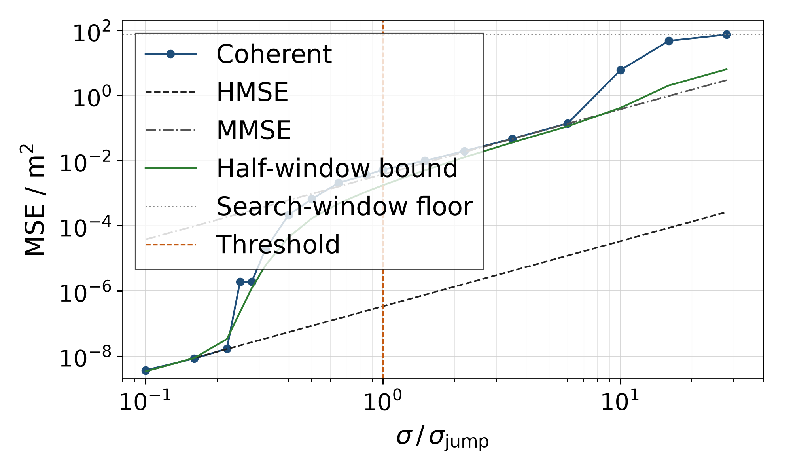
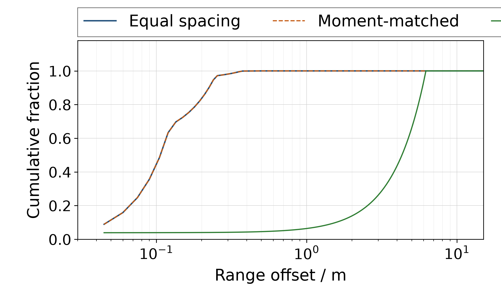

多频相位测距的门限
Range Estimation from Wrapped Multi-Frequency Phase Observations
研究笔记，2026 年 10 月。全文给出已钉死的结论、可执行的工程规则，以及仍开放且带完成标准的问题。
| 语言 | 阅读版（HTML） | 交互（Jupyter） | 纯文本 |
|---|---|---|---|
| 中文 | site/zh.html | 多频相位测距的门限.ipynb | 本文件 |
| English | site/en.html | threshold.ipynb | README.md |
阅读入口：site/index.html。图内坐标轴与图例均为英文。数字来自 computation/data/ 归档试验。无 PDF。若未登录时 GitHub 链接 404，仓库当前为 private，请下载 Release 中的 threshold-reading-site.zip 或本地打开 site/index.html。
长摘要：实现了什么，回答了什么
在有限个频率上各测一个包裹相位，并用这些相位估计距离。相干极大似然估计在双对数图上的均方误差先贴载频直线，再几乎垂直地跳到带宽直线，两条直线斜率相同。本文把第一道门限的相位尺度写成频率集合的函数
其中 \(S\) 是频点相对平均频率的二阶矩，\(\bar f\) 是平均频率。对 2400–2470 MHz、间隔 10 MHz 的八个等间距频点，\(\sigma_{\mathrm{jump}} = 0.0836\,\mathrm{rad}\)（约 4.8 度）。混合公式 \((1-p)\,\mathrm{HMSE} + p\lambda^2\) 离开载频直线的解在 \(0.204\,\sigma_{\mathrm{jump}}\)；8000 次试验中第一次滑移出现在 \(0.25\,\sigma_{\mathrm{jump}}\)，从该点到 \(1.0\,\sigma_{\mathrm{jump}}\) 样本均方等于滑移率乘以平均波长的平方，差在 0.1 分贝以内。门限上滑移率 0.344，样本均方 −22.8 分贝，带宽直线 −24.2 分贝。
半窗 Ziv–Zakai 下界在同一门限上是 −27.6 分贝。它是半窗均匀先验下的贝叶斯风险，试验是窗中心的条件均方；下界先离开载频直线，试验后离开。局部信息量不跳；不使用绝对载波相位的非相干估计从最低噪声起就在带宽直线上，因此 \(\sigma_{\mathrm{jump}}\) 不是一切估计量的门限。
非等间隔改写的不是「有没有这一跳」这一句话。保持个数、平均频率与 \(S\) 不变、只打乱间隔，第一道门限不动。公比 1.02 的几何间隔把 \(S\) 放大约 23 倍，\(\sigma_{\mathrm{jump}}\) 升到 0.403 rad；6.211 m 处出现与平均波长等代价的深谷，平台消失，错误距离不再是一个波长。更大噪声上，矩匹配设计在 10.6–11.3 m 的一串谷使半窗下界比等间距高约 1.4 分贝。
工程上：有公共相位时，约 \(0.2\,\sigma_{\mathrm{jump}}\) 以下才按载频直线做预算；约 \(0.5\,\sigma_{\mathrm{jump}}\) 到相位模型失效之前按带宽直线；无公共相位则直接按带宽直线。排频时对每个深谷解 \(P_e(\delta)\,\delta^2 = \mathrm{HMSE}\)，取最早的 \(\sigma\)；更长的无模糊距离不推迟第一道门限。
仍开放且可关闭的五件事：按最坏谷在整数兆赫约束下排频；同一先验下比较后验均值与相干极大似然；只在残差接近半周的谷上改用包裹似然比；在复观测上复核第一道门限；滑移长于一个波长以后用 \(\delta^2\) 加权。两件不做：证明一切估计量都在 \(\sigma_{\mathrm{jump}}\) 上跳；用中国余数定理推迟第一道门限。
1 观测与两个估计量
第 \(i\) 个频率上的观测是
各 \(e_i\) 独立，\(c = 299\,792\,458\,\mathrm{m/s}\)。\(\mathrm{wrap}\) 把角度折回 \((-\pi,\pi]\)：真相位可以差任意多个 \(2\pi\)，读数只留下主值。因此有限个频率上的相位只能把距离确定到一个别名格点为止。
相干估计最小化包裹残差的平方和。它使用相对同一本振的绝对相位，因而载频进入距离信息。若每个音共享一个未知公共相位，估计量改为最大化相量和的模；此时载频从距离信息中消去，只剩下频率间距所携带的信息。下文称后者为非相干估计。
该相位模型是复观测 \(y_i = \exp(\mathrm{j}\,2\pi f_i d/c) + n_i\) 的高信噪比边缘。下文导出的第一道门限落在约 \(0.08\,\mathrm{rad}\)（等间距例子），边缘仍成立。相位噪声到约 \(1\,\mathrm{rad}\) 时，相位边缘本身失效，预算必须回到复观测；那是第二道门限，与第一道分开处理。
往返传播把相位写成 \(4\pi f d/c\)，等价于把上式中的 \(c\) 换成 \(c/2\)。波长与模糊周期缩小一半，下文两条均方都除以 4；\(\sigma_{\mathrm{jump}}\) 由频率比决定，弧度值不变。
2 两条平行直线
问题：噪声很小、误差尚未跨进下一个折叠时，相干均方贴哪条线？公共相位被消去以后，又贴哪条线？
记 \(F = \sum_i f_i^2\)，\(S = \sum_i (f_i - \bar f)^2\)。载频直线与带宽直线是
二者都正比于 \(\sigma^2\)。比值 \(R = F/S\) 不随 \(\sigma\) 改变，因此双对数图上两条直线平行。李巍与齐望东（arXiv:1202.1424）的式 (30) 与式 (42) 分别给出这两条高度；他们没有把第一道门限的噪声写成频率集合的函数。
\(N\) 个等间距频点、带宽 \(B = (N-1)\Delta f\) 时，
\(N\) 很大时系数趋于 12，主导项是 \(12(\bar f/B)^2\)。Weiss 与 Weinstein 在连续时间、平坦谱的时延估计里得到同一因子；那是另一套观测模型上的同一极限数，不是把离散包裹相位等同于连续平坦谱。\(N = 8\) 时系数是 9.33；同一 \(\bar f/B\) 下，连续谱公式大约高 1.1 分贝。
本文等间距例子：2400 到 2470 MHz，间隔 10 MHz。平均频率 2435 MHz，带宽 70 MHz，\(S = 4200\,\mathrm{MHz}^2\)，\(R = 11295\)（40.53 分贝），平均波长 \(\lambda = 0.12312\,\mathrm{m}\)。
3 第一道门限坐在哪里
问题：相干估计从载频直线跳到带宽直线，发生在什么相位噪声上？
3.1 相位尺度 \(\sigma_{\mathrm{jump}}\)
取两个距离假设，相差一个平均波长。折叠去掉整周后，相位差向量的长度是 \(2\sigma_{\mathrm{jump}}\)，其中
等间距例子是 \(0.0836\,\mathrm{rad}\)。在这个噪声上，单次相位读数远没有折到 \(\pm\pi\)；折叠发生在距离假设跨过一个载频周期的时候。
把相位差向量当作高斯观测来判决，错误概率是
\(J(\delta)\) 是该距离差上的相位代价，\(Q\) 是标准正态右尾。在平均波长处，自变量正好是 \(\sigma_{\mathrm{jump}}/\sigma\)。\(\sigma = \sigma_{\mathrm{jump}}\) 时，向左右各错一个波长的概率合计 \(2Q(1) = 0.317\)。
这个 \(P_e\) 是高斯向量检验，不是包裹以后的似然比。主瓣附近、残差远小于 \(\pi\) 时两者接近；残差接近 \(\pi\) 的谷放到第 5 章与开放问题里处理。
3.2 混合公式离开载频直线的解
一次试验以概率 \(p = 2Q(\sigma_{\mathrm{jump}}/\sigma)\) 滑出一个波长，否则留在主瓣。混合预测是
令 \(p\lambda^2 = \mathrm{HMSE}\)，等间距这组解出 \(\sigma = 0.0170\,\mathrm{rad}\)，即 \(0.204\,\sigma_{\mathrm{jump}}\)。这是混合方程的解，不是从试验曲线上读出的转折点。8000 次试验期望看见一次滑移的位置约在 \(0.26\,\sigma_{\mathrm{jump}}\)。
在 \(\sigma = \sigma_{\mathrm{jump}}\) 时 \(\lambda^2 = 4\,\mathrm{MMSE}\)。若 \(p = 0.317\)，则 \(p\lambda^2\) 比带宽直线高 1.0 分贝。
3.3 等间距试验看见的上升
相干估计在以真值 12.345 m 为中心、半长 14.990 m 的窗里搜索。0.22 到 0.50 倍门限每个噪声点 8000 次，其余 1600 次。滑移指误差绝对值超过半个平均波长。
0.10 与 0.22 倍门限上滑移为零，样本均方与载频直线相差 0.3 分贝以内。0.25 倍处 8000 次中有一次滑移，样本均方升到 −57.2 分贝；一次一个波长的错误在 8000 次里的贡献也是 −57.2 分贝。该点是一次大误差抬高样本均值，不是一条介于两线之间的渐近线。
从 0.25 倍到 1 倍门限，样本均方等于滑移率乘以 \(\lambda^2\)，差在 0.1 分贝以内。门限上滑移率 0.344，样本均方 −22.8 分贝，带宽直线 −24.2 分贝，高出 1.4 分贝，与 0.317 所预测的 1.0 分贝同向。1.5 倍以后，一部分滑移长于一个波长，样本均方开始高于这个乘积。图 1 是这条曲线。

图 1 等间距八个频点的均方误差（图内英文标注），横轴用 \(\sigma_{\mathrm{jump}} = 0.0836\,\mathrm{rad}\) 归一。相干估计离开载频直线后贴上带宽直线。绿色曲线是搜索半窗上的下界；橙色竖线在门限处。
非相干估计从最低噪声起就在带宽直线上。0.10 倍门限处它是 −44.4 分贝，带宽直线是 −44.2 分贝。公共相位一开始就把载频消掉，下面没有更低的直线；因此 \(\sigma_{\mathrm{jump}}\) 不是一切估计量的门限。
3.4 局部信息不跳
单个包裹正态相位关于自身参数的 Fisher 信息是 \(\sigma\) 的光滑函数。由此得到的距离局部克拉美–罗界跟着载频直线走，不跳。等间距这组上，它到 \(\sigma = 0.84\,\mathrm{rad}\) 仍与载频直线相差 0.03 分贝。跳跃是全局估计量离开了主瓣。
同一骨架出现在单音频率的极大似然估计里：Rife 与 Boorstyn 写过，高信噪比方差贴着克拉美–罗界，低于一道门限后锁到错误谱峰。那里参数是频率，观测不是一组包裹相位；结构同类，对象不同。
4 下界是什么，不是什么
问题：图 1 中在试验之前就离开载频直线的绿色曲线，约束的是什么？
半窗上的 Ziv–Zakai 下界是
\(L = 14.990\,\mathrm{m}\)，\(G\) 把加权错误概率曲线上的洼地填平（谷填充），\(P_e\) 仍用上面的高斯向量检验。Ziv 与 Zakai 的分辨思想给出这类积分下界；本文加上谷填充，并把成对错误概率取成高斯相位向量检验。
高信噪比时，主瓣贡献的积分恒等于 \(1/4\)（来自 \(\int_0^\infty u\,Q(u)\,\mathrm{d}u = 1/4\)），下界回到载频直线。等间距在 \(\sigma = 0.008\,\mathrm{rad}\) 上，两者之差是 0.00 分贝。对积分有贡献的距离差大约只有 0.5 mm。
下界是真值在半窗上均匀分布时的贝叶斯风险。试验是真值固定在窗中心。在门限上，下界 −27.6 分贝，带宽直线 −24.2 分贝，相干试验 −22.8 分贝。0.22 倍门限处试验仍没有滑移，下界已经比载频直线高约 3 分贝。下界先离开，试验后离开。它约束均方；它不是试验曲线上的转折点。
半窗先验方差是 12.7 分贝。试验地板来自整段搜索窗 29.979 m，为 18.74 分贝。\(\sigma = 2.34\,\mathrm{rad}\) 时等间距下界是 8.1 分贝，还没有贴到先验方差。整段模糊周期上的下界会被周期远端的复制谷抬高；本文不使用那一条。
第二道门限是另一件事。\(\sigma\) 到 1 弧度量级时，相位边缘失效，必须回到复观测。等间距相干试验在 \(\sigma = 0.50\,\mathrm{rad}\) 仍贴着带宽直线，到 \(\sigma = 2.34\,\mathrm{rad}\) 才落到 18.7 分贝的窗地板。这道门限移动的是地板何时到来，不是 \(\sigma_{\mathrm{jump}}\)。
5 非等间隔实际改写什么
频率集合上有三个彼此不可替代的设计量。
- \(S/\bar f^2\) 决定第一道门限的相位尺度，也决定两条直线的垂直间隔。把频点从平均频率两侧拉开，这一跳变矮，并移到更大的相位噪声上。
- 每个深谷的代价 \(J(\delta)\) 与距离平方 \(\delta^2\) 决定平台是否还在，以及滑错以后的代价是一个波长的平方还是数米的平方。\(J(\delta)\) 与 \(J(\lambda)\) 相当时，滑过去的概率与错一个波长相同。
- 频点的最大公约数决定所有相位同时回到整周的精确周期，也就是无模糊距离。互素或中国余数式的排频只移动这一个周期；它不推迟第一道门限。
5.1 保持二次矩并不能取消这一跳
第二组保持与等间距相同的个数、平均频率和间距二次矩，频点取整数兆赫，间隔的最大公约数是 1 MHz，精确周期约 300 m。八个频点为 2390、2418、2425、2432、2443、2449、2454、2469 MHz。\(R\) 与 \(\sigma_{\mathrm{jump}}\) 因此与等间距相同。
在 \(\sigma = 0.0836\,\mathrm{rad}\) 上，半窗积分的分段与等间距相同。2 m 以内的代价也重合。只把等间隔改成不等间隔、同时保持二次矩，取消不了这一跳。两组的差别要到更大的噪声才出现。
5.2 谷段如何进入半窗积分
谷填充不是把每个谷的错误概率加起来。从右向左看，加权错误概率 \((L-\delta)P_e(\delta)\) 每出现一次新的自右向左高点，该 \(\delta\) 负责它左侧、直到上一个更高点之间的那一段。右端为 \(\delta_a\)、左端为 \(\delta_b\) 时，贡献是
左端若接上主瓣，\(\delta_b\) 取 \(\sqrt{J(\delta_a)}/\beta\)，其中 \(\beta = 2\pi\sqrt{F}/c\)。等间距在门限上，这条边界只有 1.2 mm。
在 \(\sigma = 0.0836\,\mathrm{rad}\) 上，平均波长那一段贡献 −29.2 分贝，二倍波长 −32.9 分贝，三倍波长 −43.0 分贝。三段相加 −27.6 分贝，与半窗数值积分相同。按数值积分来分，平均波长的谷占 67%，二倍波长占 29%。更远的谐波几乎不进积分：代价按谐波次数的平方变深，错误概率掉得比距离平方的增长更快。
几何间隔不是这样。它的远谷填不满主瓣，因为 \((L-\delta)\) 更小，加权错误概率低于平均波长处。它负责的是从平均波长一直延伸到该谷的长段。图 2 把这一差别画在同一个噪声上。

图 2 半窗下界沿距离的累计占比（图内英文标注），噪声取等间距门限 0.0836 rad。等间距与矩匹配在 0.25 m 以内积满；几何间隔要到 6.21 m 才积满。
5.3 几何间隔拿掉平台
第三组是公比 1.02 的等比频率，中心取 2435 MHz，算术平均 2437.5 MHz。\(S\) 约为等间距的 23 倍，\(R\) 降到 26.87 分贝，\(\sigma_{\mathrm{jump}}\) 升到 0.403 rad。平均波长仍是 0.1230 m。这是 \(S/\bar f^2\) 的变化：第一道门限的相位尺度变大，两条直线的间隔变矮。
6.211 m 处的谷底代价是 0.650，与平均波长处的 0.650 相同。八个相位残差的绝对值都不超过 0.44 rad。这是一个深旁瓣，不是所有频点同时回到整周。距离约为平均波长的 50 倍，平方误差约高 34 分贝。滑过去的概率与错一个波长相同，错的距离则不是一个波长。
因为 \((L-6.211\,\mathrm{m})\) 更小，这个远谷的加权错误概率低于平均波长谷，填不满主瓣。它负责的区间是从平均波长到 6.211 m。这一段占半窗积分的 96%。概率质量沿这段分布：一半在 4.3 m 以外，九成在 5.9 m 以内，不是集中在 6.211 m 一点。半窗下界因此是 −51 分贝，载频直线仍是 −64.8 分贝。
噪声的绝对值与等间距试验相同，所以 \(\sigma = 0.0836\,\mathrm{rad}\) 只是几何间隔自身门限的 0.21 倍。该点相干试验仍在载频直线上，−64.5 分贝；下界已经是 −51 分贝。到自身门限的 0.31 倍，相干与非相干都到了 −13.2 分贝，滑移率只有 0.0031。同样的滑移率若都落在一个波长上，均方只有约 −43 分贝。\(0.0031\times(6.21\,\mathrm{m})^2\) 约是 −9 分贝，与 −13 分贝同一量级。平台消失。用平均波长算出的混合离开点在 0.0967 rad，只预告概率何时起来，不预告误差有多远。图 3 是这组曲线。

图 3 几何间隔的均方误差（图内英文标注）。横轴用这一组自己的门限 0.403 rad 归一。相干估计离开载频直线后越过带宽直线，中间没有平台。绿色曲线是搜索半窗上的下界。
三组的二次矩与门限如下。
| 设计 | 平均频率 | 间距二次矩 | 间隔 | 门限 |
|---|---|---|---|---|
| 等间距 | 2435 MHz | 4200 MHz² | 40.53 dB | 0.0836 rad |
| 矩匹配 | 2435 MHz | 4200 MHz² | 40.53 dB | 0.0836 rad |
| 几何间隔 | 2437.5 MHz | \(9.78\times 10^4\) MHz² | 26.87 dB | 0.403 rad |
表 1 三组频点。矩匹配与等间距共用平均频率、间距二次矩和门限。几何间隔的 \(S\) 更大，门限更高，直线间隔更矮。
5.4 更大噪声上的一串谷
矩匹配与等间距要到相位噪声再大一个量级才分开。\(\sigma = 0.836\,\mathrm{rad}\) 时，半窗下界分别是 −2.4 与 −3.8 分贝。矩匹配在 10.6 到 11.3 m 有一串谷，谷底代价约 14；等间距在同一段约 25。这一串里加权错误概率最高的一点在 10.65 m，单独占矩匹配积分的 29%。去掉这一段，下界从 −2.4 分贝落到约 −3.9 分贝，与等间距的 −3.8 分贝相符。窗内最深的谷并不在 10.65 m，而在稍远的 11.0 m；\((L-\delta)\) 偏向更近的那一个，所以自右向左的加权错误概率新高落在 10.65 m。近处的谷没有造成这 1.4 分贝。这些谷的代价约是 14，不是 0，所以也不是精确的整周重合。
6 工程规则
第一道门限处，相位边缘仍然成立。等间距这组的 \(\sigma_{\mathrm{jump}}\) 是 \(0.0836\,\mathrm{rad}\)（约 0.084 rad）。\(\sigma\) 到 1 弧度量级时，相位边缘失效，预算必须回到复观测。那是第二道门限，不要和第一道混用。
有公共相位参考时：
- 工作点约在 \(0.2\,\sigma_{\mathrm{jump}}\) 以下，才按载频直线做预算。等间距这组对应的相位标准差约为 1 度，即 0.017 rad。
- 大约 \(0.5\,\sigma_{\mathrm{jump}}\) 到相位开始折叠之前，预算改用带宽直线。这一组因此比载频直线差 40.53 分贝。
没有公共相位时，高信噪比预算直接就是带宽直线；载频直线上的那一跳没有对应的工作区。远处若还有与 \(J(\lambda)\) 相当的深谷，取消公共相位只去掉载频直线，去不掉那一段上升。
设计频点时，对每一个深谷解 \(P_e(\delta)\,\delta^2 = \mathrm{HMSE}\)，取最早的那个 \(\sigma\)，不要只报 \(\sigma_{\mathrm{jump}}\)。等间距上，这个方程的解与 \(0.20\,\sigma_{\mathrm{jump}}\) 重合，因为危险谷就在平均波长上。几何间隔上，远谷把下界抬得更早：在自身门限的 0.21 倍，下界已经是 −51 分贝，载频直线仍是 −64.8 分贝。一次未被检出的滑移，概率与错一个波长相同，均方约差 34 分贝。
三个设计量分开考核。拉开 \(S/\bar f^2\) 改变第一道门限和直线间隔。深谷的 \(J(\delta)\) 与 \(\delta^2\) 改变平台和滑错的距离。最大公约数改变无模糊距离。用更长的精确周期去推迟第一道门限，动的是第三个量，第一个不动。
7 已关闭与仍开放
7.1 已经钉死的结论
- 两条直线的高度由 \(F\) 与 \(S\) 决定；\(R = F/S\) 使它们在双对数图上平行。
- 第一道门限的相位尺度是 \(\sigma_{\mathrm{jump}} = \pi\sqrt{S}/\bar f\)；它是「错一个平均波长」这一高斯检验的尺度，不是对一切估计量成立的定理。
- 等间距上，混合方程离开载频直线的解在 \(0.204\,\sigma_{\mathrm{jump}}\)；8000 次试验首次滑移在 \(0.25\,\sigma_{\mathrm{jump}}\)；从该点到门限，样本均方等于滑移率乘以 \(\lambda^2\)（0.1 分贝以内）。
- 局部 Fisher / 克拉美–罗不跳；非相干估计无此跳。
- 半窗 Ziv–Zakai 下界是先验风险，先于条件试验离开；它不是试验转折点。
- 保持二次矩的非等间隔不取消第一道门限；远处 \(J(\delta)\approx J(\lambda)\) 的谷取消平台并放大错误距离。
- 无模糊距离与第一道门限是不同的设计量。
有限样本的全局包裹最小二乘均方没有闭式。上文给出的是门限的相位尺度、谷填充下界，以及归档试验与二者的对照。下界是界。
7.2 随后要回答的问题
下面五件事都已经有明确的完成标准。做完其中一件，就关闭一个现在仍开放的问题。不追求有限样本全局包裹最小二乘的闭式。
按最坏的谷排频点
在带宽、\(N\) 和合成器步长（整数兆赫）的约束下，使「最早离开载频直线的那个 \(\sigma\)」尽量大，同时不留下 \(J(\delta)\approx J(\lambda)\) 且 \(\delta\) 远大于 \(\lambda\) 的谷。完成的标准：一组频点，其第一道门限晚于等间距，并且没有任何一个谷在远大于平均波长的距离上达到与 \(J(\lambda)\) 相当的深度。矩匹配已经说明，二次矩不变时只打乱间隔没有用。要动的是 \(S\) 和那些深谷的位置，两件一起看。
同一先验下比较贝叶斯均方
在门限上，半窗下界是 −27.6 分贝，相干试验是 −22.8 分贝，大约差 5 分贝。下界是半窗均匀先验下的贝叶斯风险，试验是窗中心的条件均方。要判断这 5 分贝是界松了还是估计量次优，必须在同一个先验下计算后验均值的均方，并与相干极大似然比较。完成的标准：同一先验、同一噪声网格上的两条均方曲线，以及门限处差值的归属。这也回答整周模糊的整数最小二乘、或对模糊边沿积分，是否值得做。
只在残差接近半周的谷上换似然比
高斯向量检验在残差远小于 \(\pi\) 时是合适的近似。第一道门限上 \(\sigma = 0.08\,\mathrm{rad}\)，几何间隔 6.211 m 的残差也不超过 0.44 rad，这两处都不是可疑的地方。可疑的是 \(\sigma = 0.836\,\mathrm{rad}\) 时 10.6 到 11.3 m 那一串谷，残差可以到大约 2.5 rad。完成的标准：只在这一串谷上，用包裹以后的似然比代替高斯向量检验，看矩匹配与等间距那 1.4 分贝的下界差是否移动。不必先把所有距离上的错误概率都改写成包裹形式。
在复观测上只复核第一道门限
相位模型是复观测的高信噪比边缘。第一道门限处这个边缘成立。完成的标准：在同一组等间距频点上，用相干极大似然直接处理复观测，核对第一道门限是否仍在 \(\sigma_{\mathrm{jump}}\) 附近。预期是第一跳不变，地板和第二道门限会动。幅度衰落、各频点信噪比不同、以及共用本振带来的相关相位噪声，是预算上的修正，放在这次核对之后。
滑移长于一个波长以后的二次矩
\(1.5\,\sigma_{\mathrm{jump}}\) 以后，等间距的样本均方高于滑移率乘以 \(\lambda^2\)，因为一部分错误长于一个波长。等间距的谷在 \(k\lambda\) 上，深度按 \(k^2\) 变化，可以用 \(\delta^2\) 与 \(Q(k\sigma_{\mathrm{jump}}/\sigma)\) 对自右向左的加权错误概率新高所对应的那些谷加权。非等间隔则用第 5 章谷段公式里那些新高点，而不是整数倍波长。完成的标准：在 1.5 倍门限以远，这个加权与样本均方的差落到比现在的 \(\lambda^2\) 乘积明显更小，并写明仍对不上的那一段。
7.3 两件不做的事
不证明每一个估计量都在 \(\sigma_{\mathrm{jump}}\) 上跳跃。非相干估计从最低噪声起就在带宽直线上，已经是反例。门限是「错一个平均波长」这个检验的相位尺度，只对仍然用得上绝对载波相位的估计量有意义。
也不用中国余数定理或更长的精确周期去推迟第一道门限。那只移动无模糊距离。第一道门限由 \(\bar f\) 与 \(S\) 决定，远处深谷再按 \(J(\delta)\) 与 \(\delta^2\) 改写平台。
8 文档与归档试验
本文是结论、工程规则与开放问题的整理。中文交互定稿为 多频相位测距的门限.ipynb；英文交互为 threshold.ipynb；本文件为中文纯文本。图内标注为英文。三张主图见 notes/figures/（notebook 内由归档数据重绘）。无 PDF。
computation/ 目录保存这些曲线背后的归档试验与生成程序，说明见 computation/README.md。文中数字以归档试验为准；以后重跑若有差别，必须写明差别，不能直接替换。
本仓库以 CC BY 4.0 发布。引用格式见根目录 CITATION.cff 与 README.md 的 License and citation 节。使用 computation/data/ 中的具体数字时，请引用本仓库并注明来自归档试验。
9 文献
李巍、齐望东，Optimization in Multi-Frequency Interferometry Ranging: Theory and Experiment，arXiv:1202.1424，2012。正文第 2 章用其式 (30)、(42) 作为两条直线的高度；他们指出第二道门限与频率排布有关，工具是微扰，未给出 \(\sigma_{\mathrm{jump}}\)。
A. Weiss 与 E. Weinstein，Fundamental Limitations in Passive Time-Delay Estimation，Part I（1983）与 Part II（1984）。正文第 2 章在等间距 \(R\) 的大 \(N\) 极限处对照其因子 \(12(\omega_0/W)^2\)；观测模型不同。
J. Ziv 与 M. Zakai，Some Lower Bounds on Signal Parameter Estimation，IEEE Transactions on Information Theory，1969。正文第 4 章的半窗下界用其分辨思想，并加上谷填充；成对错误概率取自高斯相位向量检验。
D. C. Rife 与 R. R. Boorstyn，Single-Tone Parameter Estimation from Discrete-Time Observations，IEEE Transactions on Information Theory，1974。正文第 3.4 节用来标明「局部界紧、全局均方离开」的同类结构；参数是频率，不是距离。